Six Days in Seoul, for Sai's Family
An arrival that asks nothing of you, and four days shaped around wellness, culture, and the children.
Landing, and Welcome to Korea
Incheon International
Your driver is waiting in the arrivals hall before you land, holding a card with your name.
To Park Hyatt Seoul
A little under an hour into the city in a Mercedes-Benz limousine, with water, warm blankets and chargers already waiting in the car, and then check in at the hotel.
The remainder of the evening I have deliberately left open, as much depends upon the hour you clear the airport and how the family is faring after the flight. Should you wish for a restaurant near the Park Hyatt, or something quiet sent up to the room, you need only say and it will be arranged.
Namsan, Skincare, and Myeongdong
Up to Namsan Tower
While the city is still cool and the light at its clearest, up to Namsan Tower, and the view that gathers the whole of Seoul into a single horizon.
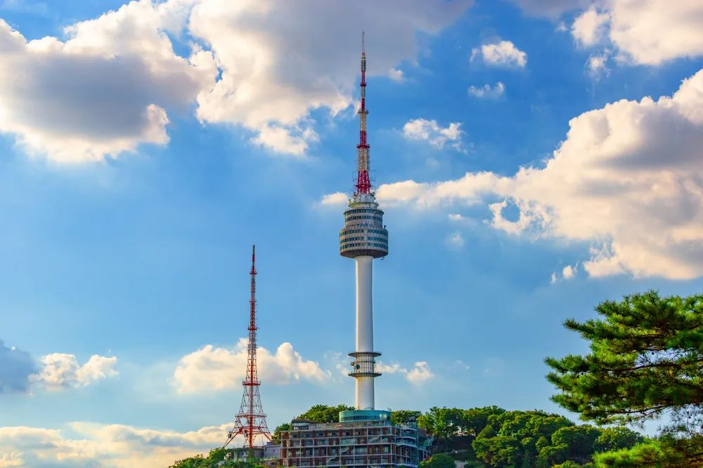
Bibimbap
At a small Michelin Guide recommended bibimbap house near Namsan.

Myeongdong, and Glasses for Your Daughter
From lunch, out along the streets of Myeongdong, where Korean cosmetics, fashion and street food appear at every turn.
This is also where your daughter's glasses will be arranged. A full eye examination, frames chosen at her own pace, and the lenses cut and fitted within half an hour, with English spoken throughout.

Facial Treatment
Two possibilities, and we will settle on one closer to the time. A facial rooted in hanbang, the Korean herbal tradition, at one of Seoul's most respected houses. Or a non invasive treatment for hyperpigmentation at a dermatology clinic.

Animal Cafe, for the Family
The rest of the family settles into an animal cafe nearby, with coffee, something sweet, and an afternoon entirely their own.

Cheese Dakgalbi
Dinner together, chicken stir fried at the table and drawn through a ring of melted cheese. It is a meal made with the hands and shared between everyone, and it is often the one families remember most.

A note on the order of these days. The skincare afternoon comes before the palace by design. Skin settles beautifully in the day following a treatment, so that by the time you are in hanbok among the pavilions, you will look and feel your very best.
Hanbok, the Palace, and the Old City
Private Hanbok Fitting
Your driver brings the family to a hanbok house beside the palace, where each of you is fitted for traditional Korean dress, the colours chosen together.

Gyeongbokgung Palace
In hanbok, through Korea's grandest palace, dressed as part of the scene. You arrive for the changing of the guard at ten, and afterwards have the grounds at the quietest hour of a December morning.

A Private Photographer, for an Hour
A photographer who works within the palace grounds often and knows precisely where the light falls at that time of morning, accompanying the family while you are in hanbok. The edited images follow afterwards.
Samgyetang
At a quiet, family run restaurant set within a hanok near the palace, known for a single dish: whole chicken simmered with ginseng until it falls from the bone.

Bukchon Hanok Village, and a Traditional Tea House
Narrow lanes of preserved hanok rising just above the palace, and then a traditional tea house for sweet rice confections and warm barley tea.

Hanwoo Korean Barbecue
Hanwoo is Korea's native breed of cattle, raised in small numbers and prized for its marbling. Dinner close by, grilled at your own table and wrapped, leaf by leaf, in lettuce.

A note on the order of this day. Gyeongbokgung closes at five in December, and under the city's new regulations Bukchon's residential lanes are closed to visitors after the same hour. The palace therefore comes before lunch and Bukchon directly after, which also places you in both while the short winter light is at its best. The changing of the guard falls at ten, and you will be there for it.
A Day That Belongs to the Children
Through the Gates as They Open
Lotte World opens at ten and stands fifteen minutes from your hotel, so you are inside before the queues gather, which does more for this day than anything else I could arrange. The park sits beneath an immense glass dome, warm and full of light whatever December is doing outside.
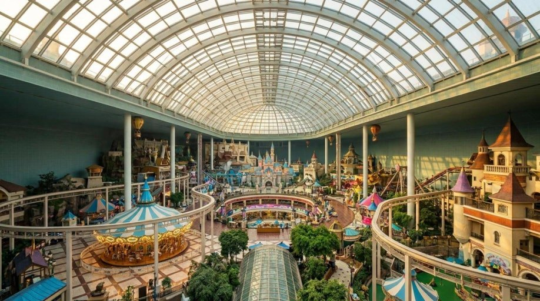
Onto the Ice
A full ice rink lies three floors below, opening at eleven on a December weekday. Skates are hired there, and with the glass dome directly overhead you have the daylight of an outdoor rink and none of the cold.
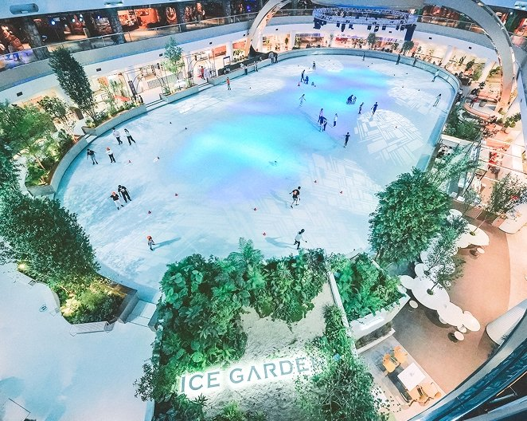
Inside the Park
The park holds no shortage of places to eat, from snack counters to proper restaurants, and my recommendation is to leave this one unreserved. Stop wherever suits the children at the moment they are hungry, which on a day such as this is rarely the hour one anticipates.
Indoors, All of It
There is an outdoor section, Magic Island, set out on the lake with the castle and the larger rides. I would leave it aside. Seoul in late December sits below freezing most days, and queueing in that with two children brings a good day to an early close. Everything worth your time is beneath the dome.
Should time and energy allow, two further possibilities sit within the same complex and require no step outdoors. The aquarium, entirely indoors. Or KidZania, a miniature city in which children take on real professions, a pilot, a doctor, a firefighter, and earn a currency of their own for doing so. The afternoon session begins at three and must be reserved in advance, so do tell me if you would like it held.
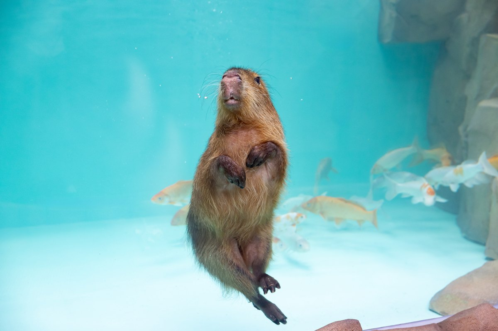
A Celebration Dinner, on the 81st Floor
You need not leave the building. Lotte World Tower rises from the same complex, and on its 81st floor are two restaurants with the whole of the city laid out beneath the windows. One is modern French, by Yannick Alleno, with a pastry library from which the children are welcome to help themselves. The other is Korean, and holds a Michelin star.
Both are formal, which is worth knowing in advance. If an occasion is what you would like of this evening, either will provide it.
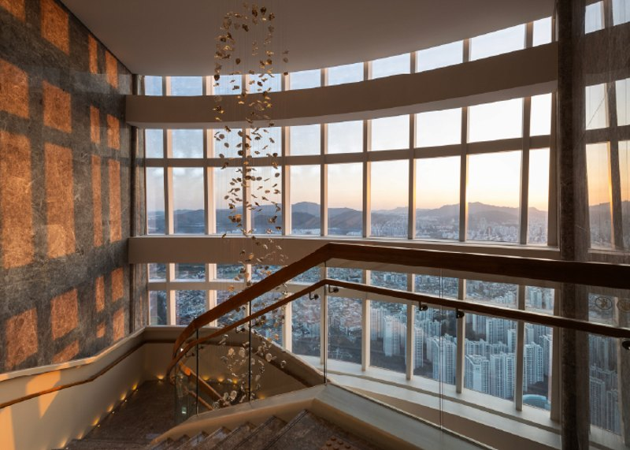
Anything Else in the Tower
Should a formal dinner be the last thing anyone wants after a day of rides, the floors below hold a great many places to eat, relaxed and easy with children. A bowl of hot noodle soup. Or Korean fried chicken, which is a thing entirely of its own here, and the dish children tend to ask for twice. You will not be short of choice, and still you never put on a coat. Tell me if you would like me to select a few for you.
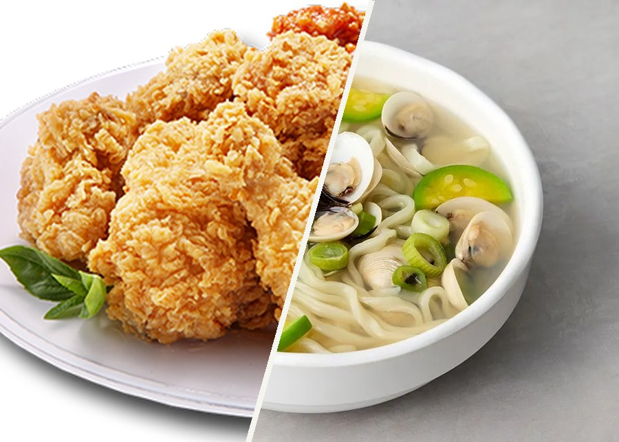
The Museum, Then a Slow Afternoon
The National Museum of Korea, Privately Guided
An English speaking guide who knows this museum well, for two hours or so across the collections that most reward a visit, at a pace set by the children.
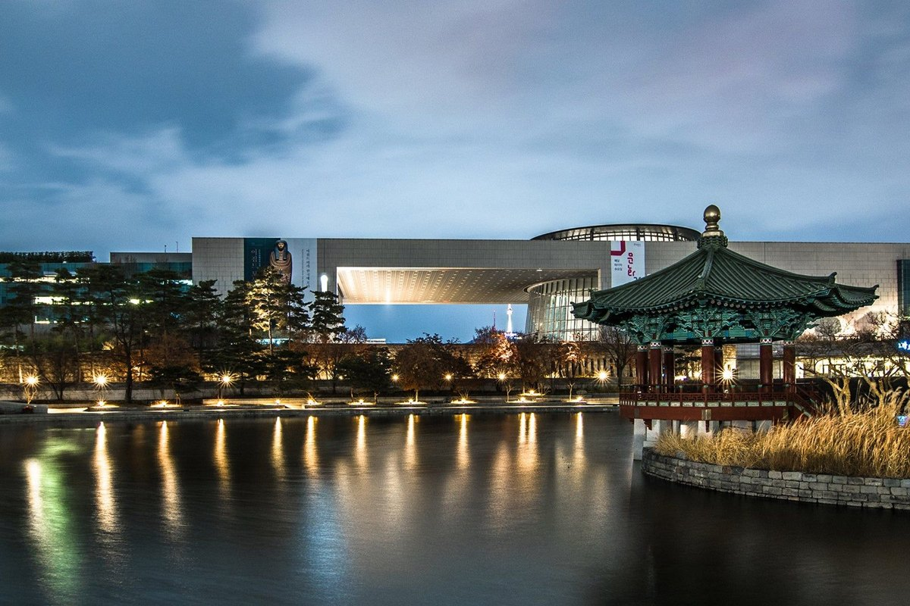
Close By
There is a food court within the museum, which is the simplest answer and an entirely good one. Should you prefer to sit down properly, tell me and I will look at what lies nearby and send you a few worth the short walk.
A Jjimjilbang
Korea's bathhouse tradition: hot mineral pools, kiln saunas at varying heats, resting rooms with heated floors, and food taken in the cotton robe handed to you at the door.
The one I would choose for you holds both. Baths and saunas on one side for the adults, a full indoor water park on the other for the children, so that no one spends the afternoon waiting upon anyone else.
One thing to know beforehand. The bathing pools are separated by gender, and within them everyone is undressed. It is unremarkable to Koreans, though I appreciate it is not for everyone. The water park, the robed floors, the saunas and the dining are all mixed and fully clothed.
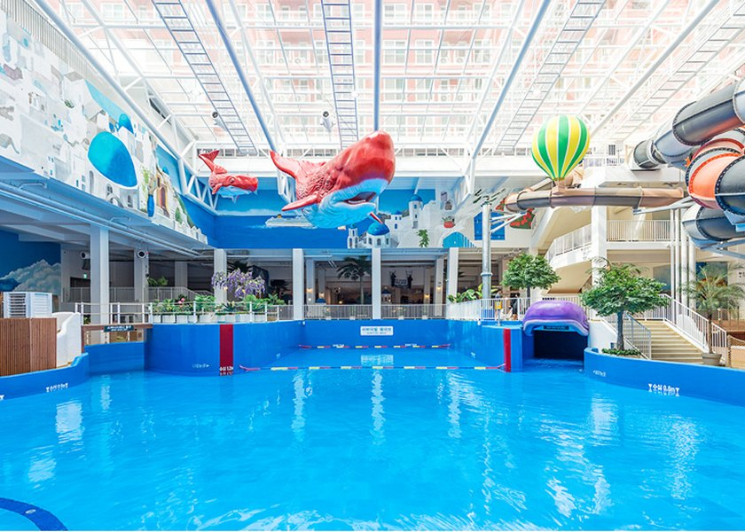
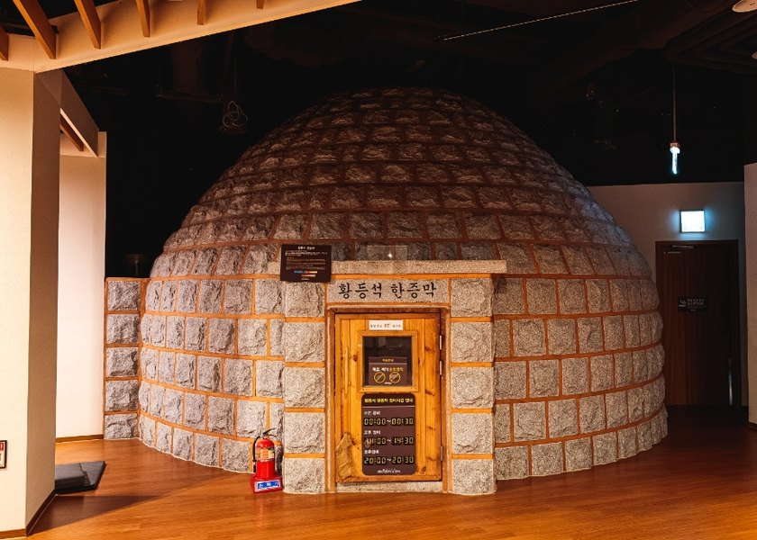
An Afternoon Out in the City
Seongsudong is where Seoul's attention sits at present, old factory buildings given over to pop up stores and vast cafes. Hongdae carries the same energy, younger and louder. Both are busy, and both place you outdoors between stops, which in late December is worth weighing. The Hyundai Seoul is the warmer answer, a department store built around an indoor garden, and the easiest of the three with children.
This is also the afternoon for any final skincare shopping. Korean skincare moves more quickly than anywhere else in the world, and what is worth carrying home changes within months, so I will send you a current list before you fly.
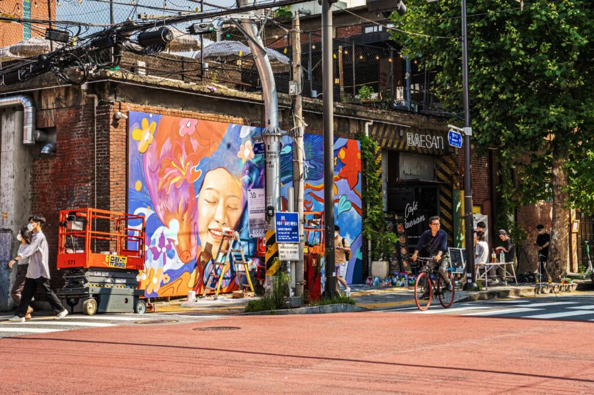
Something Slower, and Still Korean
If you would like the afternoon to remain cultural without it becoming another museum, I would arrange a craft workshop. Mother of pearl inlay, or the making of hanji paper, some two hours, indoors and warm, with all four of you leaving holding something of your own making.
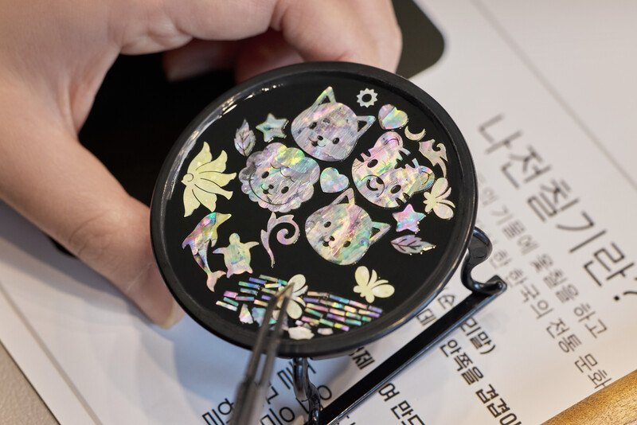
A Last Dinner, Near the Hotel
Kept close to the Park Hyatt by design, so that the evening is unhurried and the remainder of it belongs to packing. I will find two or three within a few minutes of the hotel and reserve whichever appeals. And if there is a dish the children asked for twice this week, this is the evening to return to it.
On to Japan
Airport Drop Off
Your driver collects you from the hotel and returns you to Incheon with time held in hand. Once you send me your flight details for the 23rd, I will set the collection around them.
What Travels With You
Private Driver
One of Seoul's most highly rated chauffeurs, in a Mercedes-Benz limousine, with you throughout your stay, day or night.
24 Hour Concierge
A single point of contact in Korea, reachable by message or call at any hour, for whatever may arise.
Restaurant Recommendations
Chosen and tailored to your family's journey as it unfolds.
Airport Pickup & Drop Off
So that the journey begins and ends without a single arrangement left to you.
A Bespoke Itinerary
Designed entirely around a family travelling with two children.
Journey Briefing
Each evening, a full briefing for the day to come, sent however you prefer it, by message or email, with a map of every location should you wish.
On your daughter's nut allergy. Should you wish me to take on the restaurant reservations, I will put it to every kitchen in writing and in Korean well before you arrive, and I will choose places and dishes in which nuts play little part. I should also be candid with you. Pine nuts appear in more Korean dishes than any menu will declare, and sesame oil is present in very nearly everything, so how freely we are able to move will depend upon where her tolerance sits.
Tell Me What You Would Change
Nothing here is fixed. Move a day, remove something, add whatever the children have been asking for, and I will reshape the rest around it. Every reservation, every driver and every experience across these six days is mine to secure.